Retail · médias · formation
Retail · media · education
Réalisations
Selected work
MediaMarkt Belgique · 2015
MediaMarkt Belgium · 2015
Crazy Run
Un gagnant, 100 secondes, et tout ce qu’il peut emporter dans le magasin. J’ai conçu et piloté l’opération de bout en bout : le concept, le concours, l’organisation en magasin, la coordination de la production vidéo et la diffusion. Une campagne 100 % social media, sans paid media : activation de la communauté, earned media et data first-party, avec des participants identifiés grâce à leur ticket de caisse. La vidéo officielle compte près de six millions de vues sur YouTube, sans ads.
One winner, 100 seconds, and everything he can carry out of the store. I designed and ran the operation end to end: concept, contest, in-store organisation, coordination of the video production and distribution. A 100% social media campaign, with no paid media: community activation, earned media and first-party data, with participants identified through their receipt. The official video has nearly six million views on YouTube, with no ads.
Le concept a été reconduit les années suivantes. Qualifio, l’outil de concours, en a fait une étude de cas : plus de 50 000 participants et 7 279 partages.
The concept was repeated in the following years. Qualifio, the contest tool, turned it into a case study: more than 50,000 participants and 7,279 shares.
- Près de 6 millions de vues
- Nearly 6 million views
- Près de 1 million € de media value
- Close to €1 million media value
- Earned media
- First-party data
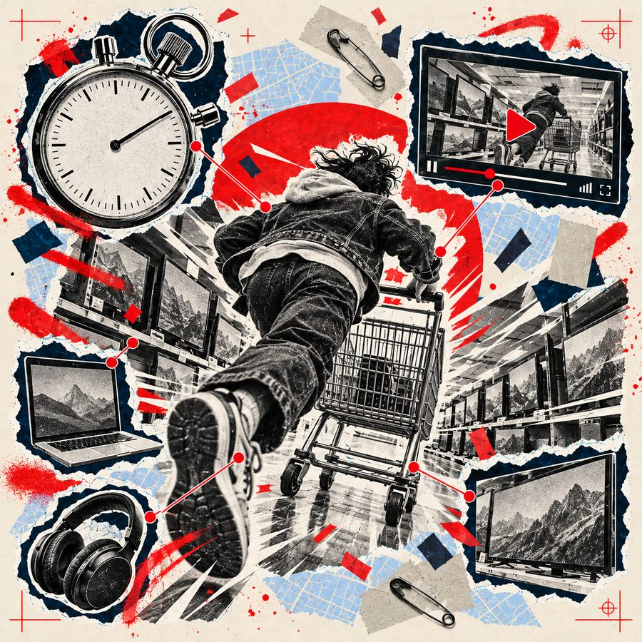
MediaMarkt Belgique · siège de Zellik · 2013 – 2016
MediaMarkt Belgium · Zellik head office · 2013 – 2016
Une page nationale, de zéro à près de 200 000 fans
A national page, from zero to nearly 200,000 fans
Conversation & Public Relations Manager au niveau belge. J’ai lancé la page Facebook nationale de MediaMarkt Belgique en 2013 et construit sa communauté à partir de zéro.
Conversation & Public Relations Manager at Belgian level. I launched the national MediaMarkt Belgium Facebook page in 2013 and built its community from nothing.
- 107 000 fans en huit mois, près de 200 000 ensuite ; numéro un du secteur en Belgique en 2014.
- Stratégie social media nationale, brand content, relations presse et campagnes de marque, en co-marketing avec de nombreuses agences et marques partenaires.
- Budget Social Media & PR de 400 000 € HTVA par an ; monitoring, KPI et reporting des résultats.
- Coordination et coaching des marketing officers des magasins : brand guidelines et marketing local.
- 107,000 fans in eight months, nearly 200,000 afterwards; number one in the sector in Belgium in 2014.
- National social media strategy, brand content, media relations and brand campaigns, in co-marketing with many agencies and partner brands.
- Social Media & PR budget of €400,000 excl. VAT per year; monitoring, KPIs and reporting on results.
- Coordination and coaching of the stores’ marketing officers: brand guidelines and local marketing.
Télésambre · depuis 2017
Télésambre · since 2017
Neuf sites, une architecture partagée
Nine websites, one shared architecture
Chez Télésambre, je pilote le marketing digital : stratégie digitale présentée chaque année à la direction, sites et applications, OTT, CRM et marketing automation (newsletters et notifications), monétisation, KPI et reporting.
At Télésambre, I lead digital marketing: a digital strategy presented to management every year, websites and apps, OTT, CRM and marketing automation (newsletters and push notifications), monetization, KPIs and reporting.
J’ai coordonné la refonte de neuf sites de médias locaux sur une architecture partagée, en faisant le lien entre les besoins éditoriaux, les équipes créatives et techniques, et l’expérience des publics.
I coordinated the redesign of nine local media websites on a shared architecture, linking editorial needs, creative and technical teams, and the audience experience.
- GA4
- Search Console
- SEO
- Google Ad Manager
- CRM
- Marketing automation
- OTT
- PWA
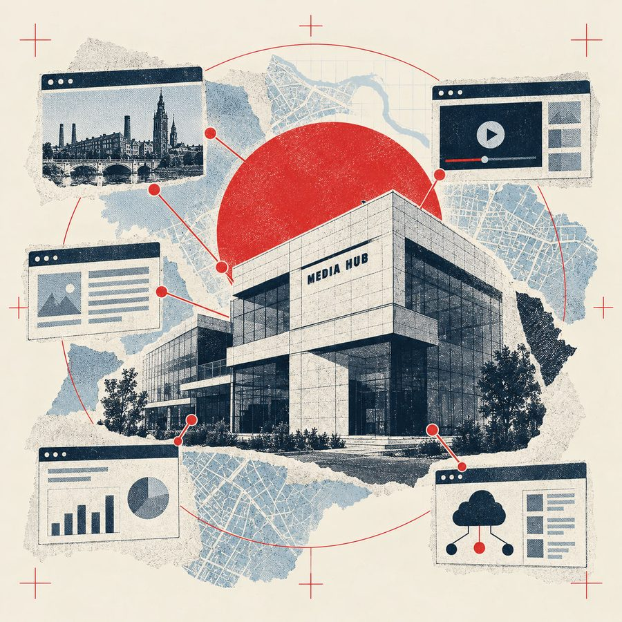
Télésambre · webapp de stratégie
Télésambre · strategy web app
Clarifier. Prioriser. Agir.
Clarify. Prioritise. Act.
Une webapp pour présenter la stratégie digitale à la direction et au conseil d’administration : 50 questions, rangées en 10 chapitres, pour clarifier les enjeux, fixer les priorités et passer à l’action.
A web app to present the digital strategy to management and to the board: 50 questions in 10 chapters, to clarify what is at stake, set priorities and move to action.
- 50 questions
- 50 questions
- 10 chapitres
- 10 chapters
- Outil interne
- Internal tool
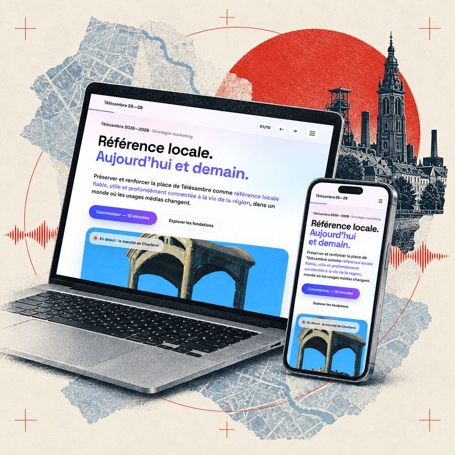
Télésambre · guide commercial · 2026
Télésambre · sales guide · 2026
Décret Décodé
Un guide en ligne qui explique les règles commerciales des médias de proximité, sources à l’appui. Les équipes y trouvent des réponses concrètes à la question « Puis-je vendre ça ? », des podcasts, une vidéo et un quiz pour tester leurs réflexes.
An online guide that explains the commercial rules for local media, with its sources. Teams find concrete answers to the question “Can I sell this?”, plus podcasts, a video and a quiz to test their reflexes.
Ouvrir le guideOpen the guide Écouter les podcastsListen to the podcastsVersion du 17 novembre 2026
Version of 17 November 2026
- 50 cas pratiques pour décider vite, et 67 règles décodées.
- Une base datée : le droit est vérifié au 17 novembre 2026, et chaque règle renvoie à sa source.
- Un glossaire et une page sur ce qui change, pour suivre la réforme des médias de proximité.
- 50 practical cases to decide quickly, and 67 rules explained.
- A dated knowledge base: the law is checked as of 17 November 2026, and every rule links to its source.
- A glossary and a page on what is changing, to follow the reform of local media.
- 50 cas pratiques
- 50 practical cases
- 67 règles
- 67 rules
- Podcasts
- Quiz
Solvay Brussels School · Executive Master · 2018 – 2019
Museum Pass Musées : quatre prix, dont le Grand Prix
Museum Pass Musées: four awards, including the Grand Prix
Executive Master in Digital Marketing & Communication. Au hackathon 2019, notre stratégie marketing et communication pour Museum Pass Musées a reçu quatre prix.
Executive Master in Digital Marketing & Communication. At the 2019 hackathon, our marketing and communication strategy for Museum Pass Musées received four awards.
- Grand Prix
- Best Marketing Challenge
- Best use of Insights
- Best Personae
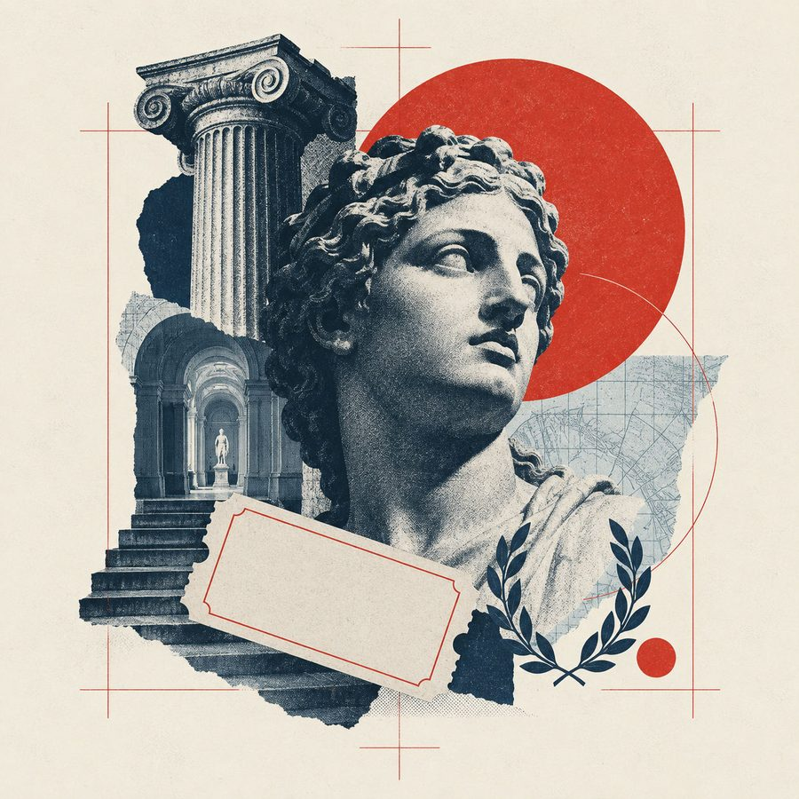
Au quotidien
Every day
L’IA agentique en production
Agentic AI in production
L’IA fait partie de mon travail de tous les jours. J’orchestre des workflows agentiques, avec des desks multi-agents et un rôle par agent : je brief, j’arbitre, je valide. Un humain dans la boucle, à chaque étape.
AI is part of my daily work. I orchestrate agentic workflows, with multi-agent desks and one role per agent: I brief, I arbitrate, I validate. A human in the loop, at every step.
- Des agents IA en production suivent les impressions publicitaires, optimisent les campagnes (CPM, CPA, ROAS) et contrôlent GA4.
- Je crée des outils internes, par reverse engineering : on décortique ce qui marche, puis on reconstruit tout à partir de zéro.
- Je forme les journalistes à l’IA et les commerciaux au digital.
- AI agents in production monitor ad impressions, optimise campaigns (CPM, CPA, ROAS) and check GA4.
- I build internal tools through reverse engineering: we take apart what works, then rebuild everything from scratch.
- I train journalists in AI and sales colleagues in digital.
- Claude
- Codex
- OpenClaw
- NotebookLM
- Cloudflare
Construits avec l’IA
Built with AI
Projets personnels
Personal projects
Des projets nés de vrais besoins à la maison. Je définis l’usage, je teste au quotidien et j’améliore version après version. Les démos utilisent des données fictives.
Projects born from real needs at home. I define the use, test them every day and improve them version after version. The demos use fictitious data.
Apprendre en jouant
Learning by playing
L’Académie
Un jeu d’heroic fantasy pour que mes enfants aient envie de réviser. Les matières de l’école deviennent des escape games : en les réussissant, ils gagnent des lancers de dé et des éclats d’étoile, avancent sur un grand plateau, débloquent des royaumes et complètent leur collection. Un espace parent suit les résultats de chacun.
A heroic fantasy game that makes my children want to revise. School subjects become escape games: when they succeed, they earn dice rolls and star shards, move across a large game board, unlock kingdoms and complete their collection. A parent area tracks each child’s results.
- 22 royaumes
- 22 kingdoms
- 351 avatars
- 120 artefacts
- 120 artefacts
- 30 escape games
- Claude Opus 5.5
- GPT SOL 6.1
- Cloudflare Workers + D1
- PWA
Démo publique · profils et données fictifs
Public demo · fictitious profiles and data
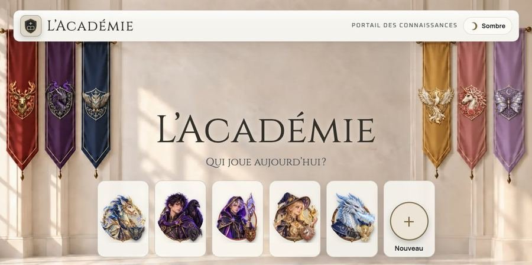
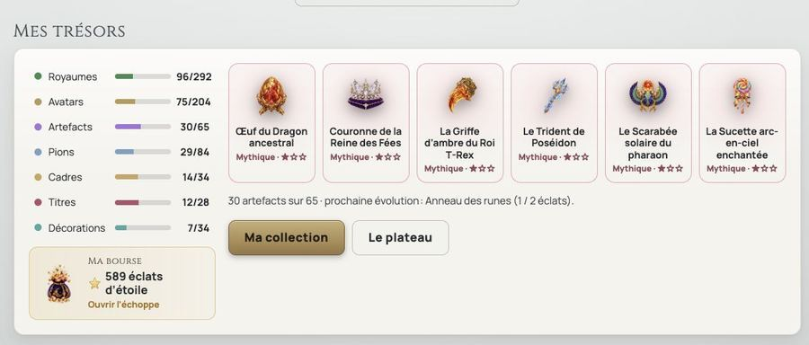
Une marque ombrelle, un branding par jeu
One umbrella brand, one branding per game
La Gazette des jeux
Une application de jeux pour notre famille, sans publicité : 41 jeux de chiffres, de mots, de logique et de duels, à ouvrir sur un téléphone ou un ordinateur. Chaque jour, quatre jeux du jour, les mêmes pour tout le monde. Chaque jeu a son branding : son logo, ses couleurs, son illustration.
A games app for our family, with no ads: 41 number, word, logic and duel games, on a phone or a computer. Every day, four games of the day, the same for everyone. Each game has its own branding: its logo, its colours, its illustration.
Ma Ferme est un vrai jeu en 3D : on sème, on récolte, on élève des animaux, on fait tourner des ateliers et on sert des clients. Les Échecs sont le plus gros chantier : 20 agents d’IA ont travaillé plus de 20 heures sur la logique du jeu, avec un coach qui explique chaque coup et une école qui s’adapte au niveau du joueur.
Ma Ferme is a real 3D game: you sow, harvest, raise animals, run workshops and serve customers. Chess is the biggest build: 20 AI agents worked for more than 20 hours on the game logic, with a coach that explains every move and a school that adapts to the player’s level.
La méthode : le reverse engineering. On décortique les meilleurs jeux qui existent, puis on reconstruit tout à partir de zéro, sans copier une ligne de code.
The method: reverse engineering. We take apart the best games out there, then rebuild everything from scratch, without copying a line of code.
- 41 jeux
- 41 games
- Plus de 120 versions
- 120+ versions
- En ligne en 15 jours
- Live in 15 days
- Claude Opus 5.5
- GPT SOL 6.1
- Cloudflare Workers + D1
- PWA
Application privée, réservée à la famille · pas en vente
Private app, for the family only · not for sale
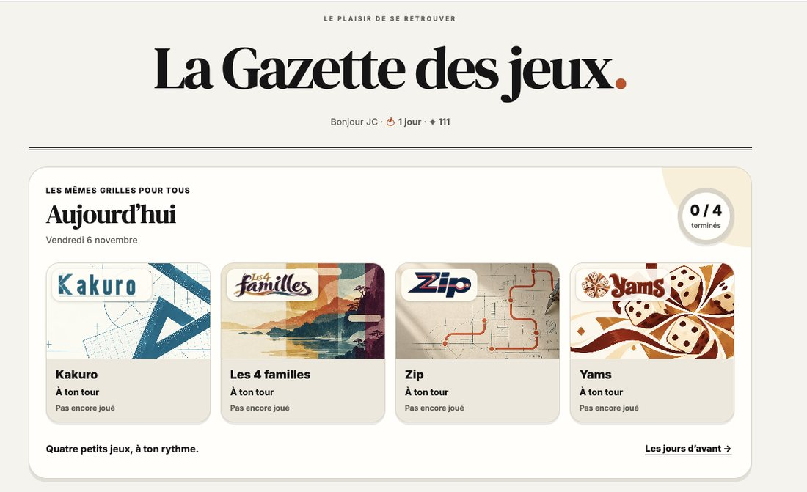
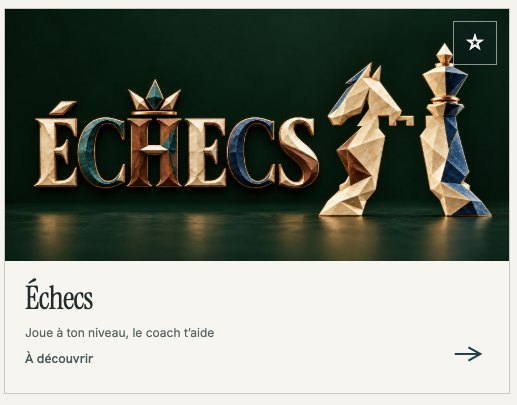
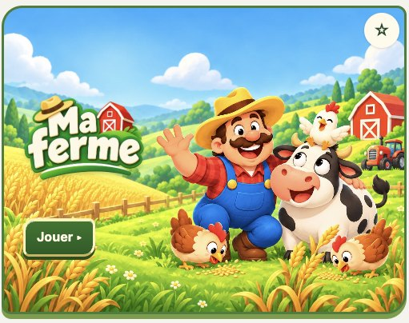
Le budget du ménage, sans connexion bancaire
The household budget, without bank connection
Notre Budget
Une webapp installable pour suivre le budget à deux : ce qui est vraiment disponible, ce qui reste à vivre jusqu’au prochain salaire, les échéances à venir et une alerte quand un budget dérape. Pas d’Open Banking : les données restent sous contrôle.
An installable web app to manage the budget as a couple: what is really available, what is left until the next pay day, upcoming payments and an alert when a budget goes over. No Open Banking: the data stays under control.
- PWA
- Cloudflare Workers
- Supabase
- Claude + Codex
Démo « John & Kimberly » · données fictives, stockées dans votre navigateur
“John & Kimberly” demo · fictitious data, stored in your browser
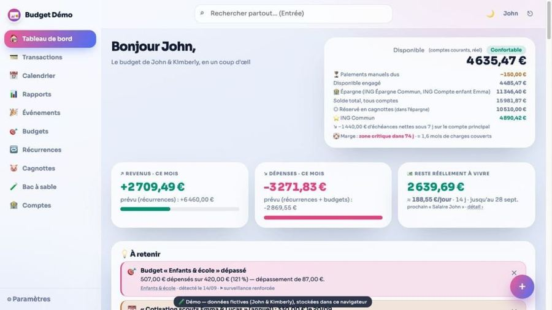
La porte d’entrée, suivie à distance
The front door, monitored remotely
Notre Porte
Une webapp pour la serrure connectée et le capteur de la porte : statut en direct, verrouillage à distance, alerte quand la porte reste ouverte, niveau des batteries et journal des passages de chaque membre de la famille.
A web app for the smart lock and the door sensor: live status, remote locking, an alert when the door stays open, battery levels and a log of each family member’s entries.
- PWA
- Domotique · Matter
- Smart home · Matter
- Claude
Mode simulation · aucune vraie serrure connectée
Simulation mode · no real lock connected
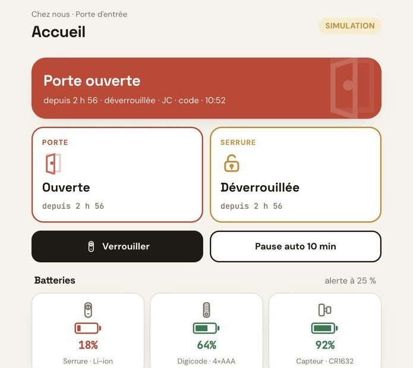